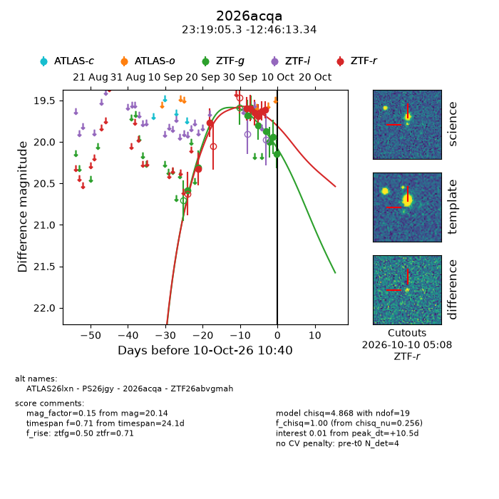
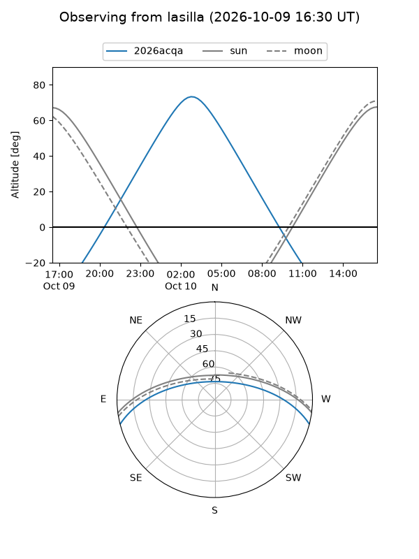
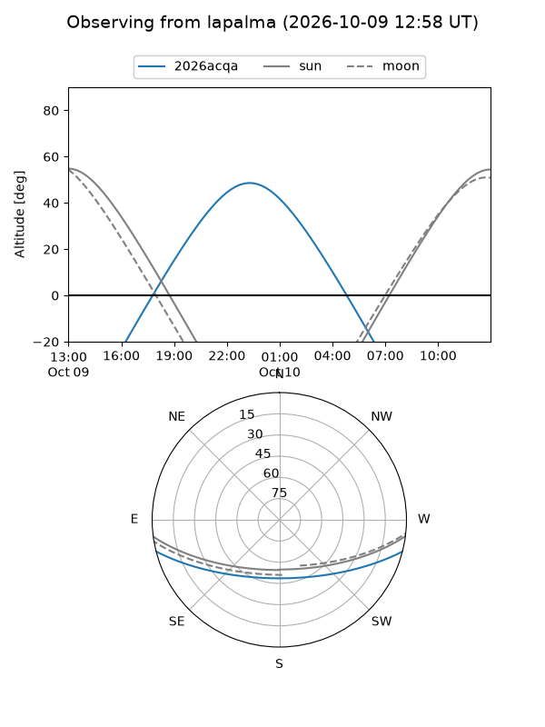
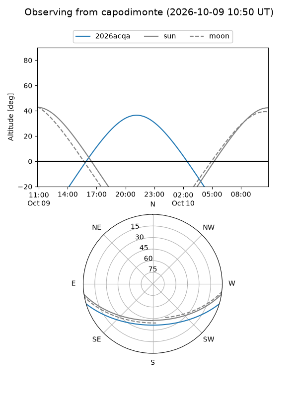
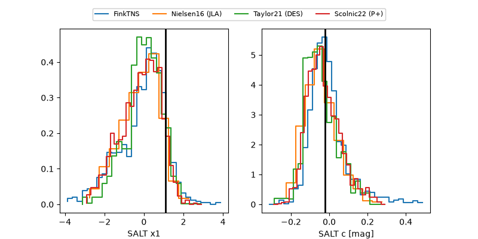

2026acqa
Target 2026acqa at 2026-10-10 10:41
Aliases and brokers:
FINK-ZTF: ztf.fink-portal.org/ZTF26abvgmah
Lasair-ZTF: lasair-ztf.lsst.ac.uk/objects/ZTF26abvgmah
ALeRCE-ZTF: alerce.online/object/ZTF26abvgmah
YSE-PZ: ziggy.ucolick.org/yse/transient_detail/2026acqa
TNS name: wis-tns.org/object/2026acqa
Direct TNS query: direct search
alt names
ZTF26abvgmah (ztf,fink_ztf)
2026acqa (tns,yse)
ATLAS26lxn (atlas)
PS26jgy (panstarrs)
Coordinates:
equatorial (ra, dec) = 349.7721,-12.77037
equatorial (HMS+DMS) = 23:19:05.30,-12:46:13.34
galactic (l, b) = (61.9747,-64.05937)
Flags:
peak dt: +10.5
Photometry:
last ztfg=20.14, ztfr=19.61
9 ztfg, 8 ztfr detections
Lightcurve

Visibility



Additional plots
